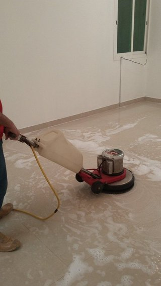

ليش شقتك ترجع متسخة بسرعة بعد كل تنظيف؟
تخلص من تنظيف الشقة كاملة يوم الخميس، وتجي يوم الأحد تلقى غبار على الطاولة وآثار أقدام على أرضية المطبخ كأنك ما سويت شي. هالشكوى نسمعها كثير من سكان الشقق في الرياض، وأغلبهم يقولون إن أهلهم في الفلل ما يعانون منها بنفس الدرجة. وفي الغالب ما يكون العيب في تنظيفك؛ سبب اتساخ الشقة بسرعة بالرياض يرجع لطبيعة الشقة نفسها: مساحتها، وتهويتها، ومكانها في العمارة.
في هالمقال نمشي على الأسباب وحدة وحدة: ليش الشقة تتسخ بسرعة بعد التنظيف بالرياض أكثر من البيوت الكبيرة، ووش هي أسباب تراكم الغبار في الشقق بالرياض بالتحديد، ووش تقدر تغيّر في روتينك عشان تطول المدة بين تنظيف وتنظيف.
ليش الشقة تتسخ بسرعة بعد التنظيف بالرياض أكثر من الفلل؟
الفيلا فيها مساحة كبيرة، وحوش، وأكثر من مدخل، وغرف ما تُستخدم كل يوم. الغبار اللي يدخلها يتوزع على مساحة واسعة، والحركة اليومية تتفرق على أدوار وغرف كثيرة. فلما تنظف مجلس في فيلا، ممكن يقعد نظيف أسبوع لأن ما أحد يجلس فيه إلا مع الضيوف.
الشقة وضعها مختلف. كل شي قريب من بعض: المطبخ يفتح على الصالة، والمدخل يوصلك للجلسة مباشرة، وأغلب العائلة تقضي يومها في غرفتين أو ثلاث. وأي غبار يدخل أو دهون تطلع من الطبخ تنتشر في نفس المساحة اللي تعيش فيها، فيبان أثرها بسرعة.
وفيه فرق ثاني ما ينتبه له كثير من الناس. الشقق في العماير غالبًا شبابيكها على جهة وحدة أو جهتين، والهواء ما يتحرك فيها بنفس الحرية. فيبقى الغبار الناعم معلق في الجو، وينزل على الأسطح بعد ساعات من التنظيف، وتحس إن الشقة رجعت متسخة حتى لو ما دخلها أحد.
التهوية المحدودة: أول سبب اتساخ الشقة بسرعة بالرياض
أغلب الشقق مصممة تكون مقفلة ومكيفة معظم السنة، وهذا منطقي مع حر الرياض. لكن الهواء المقفل يحمل كل شي يطلع داخل البيت: وبر الملابس والمفارش، وقشور الجلد، ودخان الطبخ، وبخار الحمام. وكل هذا ما يلقى طريق يطلع منه، فيرجع ينزل على الأثاث والأرضيات.
في الفلل، الدخول والطلوع من الحوش وفتح الأبواب يجدد الهواء بدون قصد. أما في الشقة، فممكن يمر أسبوع كامل بدون ما ينفتح شباك. ومع الهواء الراكد يصير الغبار الداخلي من أهم أسباب تراكم الغبار في الشقق بالرياض، وأحيانًا يكون أثره أكبر مما تتوقع.
والرطوبة لها دور بعد. المطبخ والحمامات في الشقق الصغيرة قريبة من الغرف، وبخارها يخلي الأسطح لزجة شوي، والسطح اللزج يمسك الغبار أسرع من السطح الناشف. فلو حسيت إن الرفوف القريبة من المطبخ تتسخ قبل غيرها، فهذا غالبًا السبب.
وش تلاحظ لو كانت التهوية هي المشكلة؟
- غبار ناعم يرجع على الأسطح خلال يوم أو يومين
- ريحة مكتومة لما ترجع للشقة بعد غياب
- بخار يقعد على مرايا الحمام والشبابيك فترة طويلة
- سواد خفيف يتجمع على زوايا السقف وحول فتحات المكيف
لو أكثر من علامة تنطبق على شقتك، فابدأ بالتهوية قبل ما تغير المنظفات أو تزيد عدد مرات التنظيف. وتحت بنشرح كيف تهوي الشقة بدون ما تدخل غبار الشارع.
محتاج تنظيف احترافي؟
شقتك ترجع متسخة بسرعة؟ فريقنا ينظفها تنظيف عميق من السقف للأرضية، ويشيل الغبار المتراكم من الأماكن اللي ما يوصلها التنظيف اليومي
أسباب تراكم الغبار في الشقق بالرياض من الشبابيك والمكيفات
غبار الرياض موجود أغلب السنة، ووقت الموجات يدخل من فتحات ما كنت تدري عنها. والشقة ما فيها حوش ولا مساحة خارجية تمسك جزء منه قبل ما يوصل للداخل؛ الشباك يفتح مباشرة على الشارع أو على عمارة الجيران.
أكثر نقطة يدخل منها الغبار هي إطارات الشبابيك نفسها. المطاط حول الألمنيوم يتشقق مع الحر والشمس، والشباك اللي يبان مقفل ممكن يكون فيه فراغ يمرر الغبار الناعم كل ما هب الهواء. ولو تلاحظ خط غبار على عتبة الشباك من الداخل بعد كل عاصفة، فالفتحة موجودة.
وللمكيفات نصيب كبير. المكيف اللي فلتره متسخ ما يصفي الهواء زين، وأحيانًا ينفخ الغبار المتجمع فيه على الغرفة. وفي الشقق يكون المكيف شغال أغلب اليوم، فأي غبار فيه يتوزع على المكان باستمرار. وحلّه سهل: نظف الفلتر كل شهر.
والمساحة الصغيرة تركّز الأثر. نفس كمية الغبار اللي تدخل فيلا وتتوزع على ست غرف، تدخل شقة وتنزل على ثلاث غرف بس. فتشوف الطبقة على التلفزيون والطاولات أوضح، وتحس إن الشقة تتسخ بسرعة بعد التنظيف بالرياض أكثر من بيوت أهلك.
الشقق المطلة على شوارع رئيسية أو مشاريع بناء
لو شقتك تطل على شارع زحمة أو جنبها أرض فيها بناء، فالغبار عندك من نوع ثاني: أثقل، وفيه أحيانًا بقايا عوادم أو أسمنت. هالنوع يترك طبقة رمادية على عتبات الشبابيك والبلكونة، ويحتاج مسح رطب مو نفض بس. وفي هالحالات يكون سبب اتساخ الشقة بسرعة بالرياض واضح من أول نظرة على الشباك.

مساحة صغيرة واستخدام يومي كثيف
في الشقة كل متر مستخدم. الصالة مكان الجلوس والأكل وأحيانًا لعب الأطفال، والمطبخ مفتوح عليها أو قريب منها، والممر يمر منه الكل عشرات المرات في اليوم. يعني الأرضية في نقاط معينة تنداس أكثر بكثير من أي غرفة في فيلا.
والطبخ اليومي في مطبخ صغير يطلع بخار فيه دهون ناعمة، تنتشر في الهواء وتقعد على الدواليب والرفوف وحتى على الأجهزة في الصالة. هالطبقة ما تبان بالعين في البداية، لكنها تمسك الغبار مثل اللاصق. فلو لاحظت إن الشقة تتسخ بسرعة بعد التنظيف بالرياض في الأماكن القريبة من المطبخ قبل غيرها، فابدأ بالدهون.
وبعدين فيه الأحذية. أغلب الشقق ما فيها مدخل منفصل أو مكان واضح لخلعها، فيدخل الرمل من الدرج والمصعد مباشرة للصالة. ومع كثرة الدخول والطلوع، هذا لحاله سبب اتساخ الشقة بسرعة بالرياض في بيوت كثيرة.
الأطفال والضيوف
البيت اللي فيه أطفال يتسخ أسرع، وهذا طبيعي. لكن في الشقة الصغيرة ما فيه غرفة لعب بعيدة عن الجلسة، فالألعاب وبقايا الأكل والبقع تكون في نفس المكان اللي تبيه مرتب. ونفس الشي مع الضيوف: جلسة وحدة في نهاية الأسبوع ممكن تخلي الصالة تحتاج تنظيف من جديد.
اللي يساعد هنا إنك ترتب الاستخدام نفسه: منطقة لعب واضحة عليها سجادة سهلة الغسيل، ومكان أكل ثابت بدل الأكل في كل زاوية، ومسح سريع بعد كل زيارة بدل ما تنتظر يوم التنظيف الكبير.
منظفات تترك بقايا وتجذب الغبار
بعض المنظفات، خصوصًا اللي فيها نسبة عالية من الصابون أو المعطرات أو الملمعات، تترك طبقة رقيقة على السطح بعد ما تنشف. السطح يبان لامع، لكنه صار لزج شوي، والغبار يلصق فيه أسرع من السطح النظيف تمامًا.
والغلطة الشائعة إن الناس يزيدون كمية المنظف عشان يحسون إن التنظيف أقوى. والنتيجة بقايا أكثر، وأرضية تتسخ أسرع، وآثار أقدام تبان بعد ساعات. فلو كنت تستخدم كمية كبيرة وما تشطف بعدها، ممكن يكون هذا سبب اتساخ الشقة بسرعة بالرياض عندك، حتى لو كنت تنظف كل يوم.
علامات إن المنظف هو المشكلة
- الأرضية لزجة شوي تحت الرجل بعد ما تنشف
- آثار الأقدام تبان بسرعة على البورسلان
- قماشة التنظيف تطلع رمادية مع إن الأرضية تبان نظيفة
- الأسطح اللامعة تمسك الغبار والبصمات خلال ساعات
استخدم الكمية المكتوبة على العبوة أو أقل، واشطف الأرضية بموية نظيفة بعد المنظف، وغيّر موية السطل أول ما تتعكر. وللأثاث الخشبي، ابتعد عن البخاخات الملمعة اللي فيها زيوت، لأنها من أسباب تراكم الغبار في الشقق بالرياض اللي ما يتوقعها أحد.
ونفس الكلام عن المعطرات. معطرات الجو والبخاخات على الكنب والسجاد تترك جزيئات تنزل على الأسطح، ومع الاستخدام اليومي تصير طبقة خفيفة يلصق فيها الغبار. خففها، وخل التهوية هي اللي تعطي الشقة ريحة حلوة.
نوع الأرضيات والأثاث وأثره على سرعة الاتساخ
أغلب شقق الرياض أرضياتها بورسلان أو سيراميك فاتح، وهالنوع يبين كل حبة غبار وكل أثر رجل. الأرضية الغامقة أو المنقوشة تخفي الوسخ أيام، أما البيج الفاتح اللامع فيبين أي شي خلال ساعات. يعني جزء من إحساسك إن الشقة تتسخ بسرعة بعد التنظيف بالرياض سببه إن الوسخ يبان أسرع على هالأرضيات، وكميته نفسها ممكن تكون عادية.
والسجاد والموكيت يخفي الغبار لكنه يخزنه. السجادة في صالة صغيرة تمسك الرمل والوبر، ومع كل خطوة يطلع جزء منه للهواء وينزل على الأسطح. فالسجاد اللي ما انظف بعمق من فترة يبقى من أسباب تراكم الغبار في الشقق بالرياض حتى لو كانت الأرضية حوله نظيفة.
والكنب القماش والستائر الثقيلة تشتغل بنفس الطريقة: أقمشة تخزن الغبار وتطلقه مع الحركة. وفي الشقة الصغيرة تكون قريبة من بعض، فأثرها أوضح.
الستائر اللي ينساها الكل
الستارة قدام الشباك أول شي يستقبل الغبار الداخل. ومع الوقت تتشبع، وكل ما فتحتها أو قفلتها تنفض جزء منه على الأرض والكنب. شفطها بالمكنسة كل أسبوعين، وغسلها أو تنظيفها بالبخار كل كم شهر، يفرق في كمية الغبار اللي تشوفها على الأسطح.
تغييرات بسيطة في روتينك اليومي
تنظيف أكثر ما يحل المشكلة إذا كان الوسخ يدخل ويتجمع بنفس السرعة. هذي عادات صغيرة نشوف أثرها واضح في الشقق:
- مكان ثابت للأحذية عند الباب، مع دعاسة من برا ودعاسة من جوا.
- مسح أسطح المطبخ بعد كل طبخة، قبل ما تبرد الدهون وتلصق.
- تشغيل شفاط المطبخ وقت الطبخ وبعده بعشر دقايق.
- تشغيل شفاط الحمام بعد الاستحمام عشان البخار ما ينتشر في الشقة.
- قفل الشبابيك وقت الغبار، وفتحها في الصبح الباكر أو بعد المغرب لما يكون الجو أهدأ.
- كنسة خفيفة للمدخل والممر كل يوم، ولو دقيقتين.
- غسل المفارش كل أسبوع، لأنها مصدر كبير للوبر.
كلها مع بعض ما تاخذ ربع ساعة في اليوم. وأحيانًا يطلع إن سبب اتساخ الشقة بسرعة بالرياض كان في عادة وحدة أو اثنتين بس.
ابدأ من المدخل
أغلب الرمل اللي تلقاه في الشقة دخل من الباب. حط دعاسة خشنة برا تمسك الرمل، ودعاسة ناعمة جوا تمسك الباقي، ورف أحذية قريب. هالترتيب ممكن يقلل الرمل في الصالة لدرجة تلاحظها من أول أسبوع.
تهوية وتنظيف يناسبون طبيعة الشقق
التهوية في الرياض تحتاج توقيت. لو فتحت الشبابيك الظهر في يوم مغبر بيدخل لك أكثر مما يطلع. الأفضل تفتح الشبابيك المتقابلة، لو عندك، في الصبح الباكر أو بعد المغرب، ربع ساعة إلى نص ساعة، وتقفلها أول ما تحس إن الجو تغير.
ولو شبابيك شقتك كلها على جهة وحدة، شغّل الشفاطات وقت التهوية عشان تسحب الهواء الراكد، أو حط مروحة قريبة من الشباك تدفع الهواء لبرا. الفكرة إنك تجدد الهواء بسرعة وتقفل، بدل ما تخلي الشبابيك مفتوحة ساعات.
رتّب خطوات التنظيف صح
ابدأ من فوق: المراوح والإضاءة وأعلى الدواليب، بعدين الأسطح والأثاث، وآخر شي الأرضية. لو مسحت الأرضية أول، بينزل عليها غبار الرفوف وترجع تمسحها.
وخل التنظيف الناشف قبل الرطب: شفط ونفض، بعدين مسح. المسح الرطب على سطح عليه غبار كثير يحوّله لطين خفيف يلصق في الزوايا. وهالغلطة تخلي ناس كثير يحسون إن الشقة تتسخ بسرعة بعد التنظيف بالرياض، لأن التنظيف وزّع الغبار وما شاله.
أدوات تفرق
قماش المايكروفايبر يمسك الغبار، والقماش القطني والريشة ينثرونه. والمكنسة الكهربائية اللي فيها فلتر HEPA تحبس الغبار الناعم بدل ما ترجعه للهواء من فتحة الخروج. ولو مكنستك قديمة وتشم ريحة غبار وقت تشغيلها، فهي تنفخ جزء من اللي تشفطه.
ونظف أدوات التنظيف نفسها. القماشة المتسخة أو الممسحة اللي ما انغسلت من أسبوع تنقل الوسخ من مكان لمكان، وتصير هي نفسها من أسباب تراكم الغبار في الشقق بالرياض.
كيف تحصل على نتيجة تدوم أطول بتنظيف احترافي؟
العادات اليومية تبطّئ رجوع الاتساخ، لكنها ما توصل للأماكن اللي يتجمع فيها الغبار من شهور: فوق الدواليب، وخلف الأجهزة، وداخل مجاري الشبابيك، وعمق السجاد والكنب. ولو كانت هالأماكن متشبعة، بيرجع الغبار منها للشقة مهما نظفت السطح.
هنا يفرق التنظيف العميق الدوري. الاستعانة بـشركة تنظيف شقق بالرياض كل كم شهر تشيل التراكم من الأماكن اللي ما توصلها في تنظيفك الأسبوعي، فيبدأ تنظيفك اليومي من نقطة نظيفة فعلًا، وتطول المدة اللي تقعد فيها الشقة مرتبة.
والتنظيف المتخصص للشقق له ترتيب وأدوات تختلف عن التنظيف العادي: يبدأ من الأسقف والمراوح، ويشمل الشبابيك ومجاريها من الداخل، ويغسل الأرضيات بالمكينة ويشفط الموية بعدها، ويستخدم منظفات بكميات مضبوطة ما تترك بقايا. وبعده يصير أسهل تعرف وش سبب اتساخ الشقة بسرعة بالرياض في شقتك أنت، لأنك بديت من صفر.
- تنظيف الأسقف والمراوح وأعلى الدواليب
- تنظيف الشبابيك ومجاريها من الداخل
- غسيل الأرضيات بالمكينة وشفط الموية بدون بقايا
- إزالة الدهون من دواليب المطبخ وجدرانه
- تنظيف الحمامات وإزالة الترسبات
مواسم الغبار في الرياض وكيف تستعد لها
فيه فترات في السنة تكثر فيها موجات الغبار، وخلالها تحس إن كل تنظيف يروح خلال ساعات. ما تقدر توقف الغبار في مدينة صحراوية، لكن تقدر تقلل اللي يدخل منه.
قبل الموسم، افحص مطاط الشبابيك وبدّل التالف، ونظف فلاتر المكيفات. ووقت الغبار، قفل الشبابيك كاملة، وحط قماشة مبللة عند عتبة الشباك اللي يدخل منه أكثر، وأجّل التنظيف العميق لين يهدأ الجو. وبعد ما تمر الموجة، امسح العتبات والأسطح مسح رطب قبل الكنس، عشان ما يطير الغبار الناعم من جديد.
وفي هالمواسم تزيد أسباب تراكم الغبار في الشقق بالرياض اللي تجي من برا، فخل جهدك على منع الدخول أكثر من التنظيف المتكرر.
هل يفرق دور الشقة في سرعة الاتساخ؟
الشقق في الدور الأرضي والأول أقرب للشارع والرصيف ومواقف السيارات، فيوصلها غبار أثقل، ورمل يدخل مع الأحذية من مدخل العمارة. والأدوار العليا أبعد عن غبار الشارع، لكنها تتعرض أكثر للرياح، والغبار الناعم يوصلها مع الهواء.
والشقة اللي فوقها سطح مكشوف أو جنبها وحدات مكيفات العمارة ممكن يوصلها غبار من فتحات التهوية. فلو كان سبب اتساخ الشقة بسرعة بالرياض عندك غير واضح، فكّر في موقعها من العمارة ووش اللي حولها.
المطبخ المفتوح ودهون الطبخ
المطابخ المفتوحة على الصالة صارت منتشرة في الشقق الجديدة، وشكلها حلو ويوسع المكان. لكن كل دخان وبخار من الطبخ يوصل فيها للكنب والستائر والتلفزيون مباشرة، والدهون الناعمة اللي تطلع مع القلي تقعد على الأسطح وتمسك الغبار.
شغّل الشفاط من قبل ما تبدأ الطبخ، ونظف فلتره المعدني كل أسبوعين أو ثلاثة، لأنه إذا تشبع يضعف سحبه. وغطّ القدور وقت القلي قد ما تقدر، وامسح الأسطح القريبة بمزيل دهون مرة في الأسبوع. ولو كانت الصالة القريبة من المطبخ تتسخ أسرع من غرف النوم، فالمطبخ المفتوح هو أول سبب اتساخ الشقة بسرعة بالرياض تشك فيه.
البخور والعود وأثرهم على الجدران والأسطح
البخور جزء من بيوت الرياض، وريحته من أجمل ما في البيت. لكن دخانه فيه جزيئات راتنجية ناعمة تقعد على الجدران والسقف والستائر، ومع الوقت تترك طبقة صفراء أو بنية خفيفة، خصوصًا في الأماكن اللي يتكرر فيها التبخير.
هالطبقة تمسك الغبار مثل دهون المطبخ بالضبط. وفي الشقة الصغيرة المقفلة، الدخان ما يطلع بسرعة، فيكون أثره أوضح من الفيلا. بخّر قريب من شباك مفتوح أو شفاط شغال، وامسح الأسطح القريبة من المبخرة بقماشة رطبة كل كم يوم، وخل تنظيف الجدران والسقف ضمن التنظيف العميق الدوري.
الشاشات والأجهزة والكهرباء الساكنة
لاحظت إن التلفزيون والشاشات تتغبر قبل غيرها؟ السبب إن الأجهزة الإلكترونية تتكون عليها شحنة كهرباء ساكنة تجذب الغبار الناعم من الهواء. وفي الشقق اللي فيها أجهزة كثيرة في الصالة، هالشي يبان بسرعة.
امسح الشاشات بقماشة مايكروفايبر ناشفة أو رطبة شوي بموية بس، وابتعد عن المنظفات اللي فيها كحول أو أمونيا لأنها ممكن تضر الطبقة الخارجية للشاشة. وخلف الأجهزة يتجمع غبار وأسلاك عليها طبقة سميكة، فشفطها كل فترة يقلل الغبار اللي ينتشر في المكان.
المراوح والإضاءة والأماكن العالية
مراوح السقف تجمع الغبار على ريشها، وكل ما اشتغلت ترمي جزء منه على الغرفة. ونفس الشي مع الثريات وأغطية الإضاءة وأعلى الدواليب والإطارات. هالأماكن ما تنشاف بسهولة، فتنساها، وتبقى تنزل غبار على الأسطح يوم بعد يوم.
نظف ريش المروحة بكيس مخدة قديم: دخّل الريشة فيه واسحبه، فيبقى الغبار داخل الكيس بدل ما يطيح على الأرض. وامسح أعلى الدواليب وغطّها بورق جرايد أو ورق مطبخ تبدله كل شهر، فيكون تنظيفها أسهل بكثير.
نشر الغسيل داخل الشقة
كثير من سكان الشقق ينشرون الغسيل داخل البيت، لأن البلكونة صغيرة أو معرضة للغبار. الغسيل وهو ينشف يطلع رطوبة ووبر، والرطوبة تخلي الأسطح تمسك الغبار، والوبر نفسه يتطاير وينزل على الأثاث.
لو تقدر، انشر في غرفة وحدة بابها مقفول وشباكها مفتوح أو فيها شفاط، بعيد عن الصالة. ونظف فلتر النشافة بعد كل استخدام لو عندك، لأن الفلتر المليان يخلي الوبر يطلع للجو.
كثرة الأغراض على الأسطح
الشقة اللي فيها تحف وصور وأغراض كثيرة على الطاولات والرفوف تحتاج وقت أطول في التنظيف، وغالبًا ما تنظف كل قطعة كل مرة. فيتجمع الغبار حول الأغراض وتحتها، ويرجع ينتشر لما تحركها.
قلل الأغراض المعروضة، وحط الباقي داخل دواليب بأبواب أو صناديق مقفلة. السطح الفاضي تمسحه في ثواني، فما يتأجل تنظيفه.
البلكونة وغبارها
البلكونة في الشقة تستقبل الغبار مباشرة، وأرضيتها وكراسيها ونباتاتها تتغطى بطبقة رمل بعد أي موجة غبار. ولو بابها يتفتح كثير، الرمل اللي عليها يدخل مع الأقدام ومع الهواء للصالة.
نظف البلكونة بعد كل موجة غبار، وحط دعاسة عند بابها من الداخل مثل الباب الرئيسي، وتأكد إن باب البلكونة مطاطه سليم ويقفل زين. ولو ما تستخدمها كثير، خلها مقفلة في أيام الغبار.
ولو كانت البلكونة جلسة تستخدمها، اختر كراسي وطاولة من بلاستيك أو معدن تنمسح بسهولة، وغطّ المراتب والمخدات الخارجية وقت ما تستخدمها، أو دخّلها جوا. المراتب المكشوفة تتشرب الرمل، وكل ما جلست عليها ينفض على ملابسك وتدخله معك للصالة.
الممرات والدرج في العمارة
نظافة شقتك تتأثر بنظافة العمارة. لو الدرج والممرات والمصعد ما تنظف بانتظام، فكل مرة تدخل فيها تجيب معك رمل وغبار منها. وفي العماير اللي ما فيها حارس أو عامل نظافة، هالشي يتكرر يوميًا.
كلّم المالك أو الإدارة عن جدول تنظيف للممرات، أو اتفق مع جيرانك على تنظيف مشترك. وفي الأثناء، الدعاسة عند باب شقتك من برا تمسك جزء كبير من اللي يجي من الممر.
هل تفيد أجهزة تنقية الهواء؟
جهاز تنقية الهواء اللي فيه فلتر HEPA يقدر يسحب جزء من الغبار الناعم المعلق في الهواء، ويفيد خصوصًا في غرف النوم وفي الشقق اللي تهويتها ضعيفة. لكنه ما يشيل الغبار اللي نزل على الأسطح، ولا يمنع الرمل اللي يدخل مع الأحذية.
لو قررت تشتريه، اختر حجم يناسب مساحة الغرفة، وشغّله والأبواب والشبابيك مقفلة، وبدّل الفلتر في موعده. واعتبره إضافة للعادات اللي فوق، لأنه لحاله ما يحل المشكلة.
غرف النوم والمفارش
غرفة النوم تبان هادية، لكنها من أكثر الغرف اللي يطلع فيها وبر. المفارش والبطانيات والمخدات تفقد أليافها مع الاستعمال، وكل ما رتبت السرير أو نفضت اللحاف يطلع منها غبار ناعم ينزل على الكومدينة والتسريحة والأرضية حول السرير.
لو كانت التسريحة تتغبر بعد يوم من مسحها، فالسرير هو المشتبه الأول. اغسل المفارش وأكياس المخدات كل أسبوع، واشفط المرتبة كل شهر أو شهرين، ورتّب السرير قبل ما تمسح الأسطح مو بعدها. ولو كنت تحس إن الشقة تتسخ بسرعة بعد التنظيف بالرياض في غرف النوم بالذات، جرّب هالترتيب أسبوعين وقارن.
الحمام والرطوبة
الحمامات في الشقق غالبًا صغيرة وتهويتها ضعيفة، وبعضها ما فيه شباك أصلًا. البخار بعد الاستحمام يطلع للممر والغرف القريبة، ويخلي الجدران والأسطح رطبة شوي، فيلصق فيها الغبار أسرع. ومع الوقت تلاحظ بقع رمادية حول باب الحمام أو على السقف القريب منه.
شغّل الشفاط وقت الاستحمام وبعده، وخل باب الحمام مفتوح بعد ما يطلع البخار، وامسح الأرضية بممسحة ناشفة بدل ما تخليها تنشف لحالها. وتأكد إن الشفاط نفسه نظيف، لأن الشفاط المليان غبار يسحب أقل بكثير. ولو كان الممر اللي جنب الحمام أوسخ مكان في الشقة، فالرطوبة هي سبب اتساخ الشقة بسرعة بالرياض اللي تدور عليه.
الشقق القديمة والجديدة
العماير القديمة لها مشاكلها: مطاط الشبابيك متآكل، وإطارات الألمنيوم فيها فراغات، والمكيفات قديمة وفلاترها أحيانًا ما تنفك بسهولة. وكل هذا يخلي الغبار يدخل أكثر، فيكون سبب اتساخ الشقة بسرعة بالرياض في الشقق القديمة واضح ومعروف.
والشقق الجديدة ما تسلم بعد. بقايا التشطيب من جبس وأسمنت ناعم تبقى في مجاري الشبابيك وفوق الأبواب وداخل فتحات التكييف، وتطلع شوي شوي لشهور. فلو كانت شقتك جديدة ويرجع لها الغبار بسرعة غريبة، فبقايا التشطيب من أهم أسباب تراكم الغبار في الشقق بالرياض عندك، وتنظيف عميق واحد يشيل أغلبها.
التكييف المركزي وفتحات السقف
بعض الشقق الحديثة فيها تكييف مخفي أو مركزي، والهواء يوصل للغرف من فتحات في السقف المستعار. هالمجاري الطويلة يتجمع فيها الغبار مع السنين، وكل ما اشتغل المكيف يدفع جزء منه للغرف، وتلاحظ خطوط سوداء حول الفتحات.
نظف الفتحات والشبك من برا كل شهر، وبدّل فلتر الوحدة في موعده. ولو السواد حول الفتحات يرجع بسرعة، فالمجاري نفسها تحتاج تنظيف من فني مختص، لأن الغبار المتراكم داخلها من أسباب تراكم الغبار في الشقق بالرياض اللي ما تقدر توصل لها بنفسك، ولو تركته بتحس إن الشقة تتسخ بسرعة بعد التنظيف بالرياض مهما سويت.
متى يكون الحل عند المالك؟
لو أنت مستأجر، فيه أسباب ما تقدر تعالجها لحالك: شبابيك إطاراتها تالفة، أو مكيفات قديمة تحتاج صيانة، أو ممرات عمارة ما تنظف، أو سطح مكشوف يدخل منه الغبار. وهذي كلها من أسباب تراكم الغبار في الشقق بالرياض اللي تحتاج تدخل من المالك أو إدارة العمارة.
صوّر عتبات الشبابيك بعد يوم غبار، وصوّر الفلاتر قبل تنظيفها، وارفع طلب واضح للمالك بالمشكلة والحل المطلوب. ومع الصور يصير واضح للمالك إن سبب اتساخ الشقة بسرعة بالرياض في حالتك مرتبط بحالة الشقة نفسها، مو بطريقة سكنك.
الفواصل بين البلاط
الترويب بين البلاط مسامي، يمتص الوسخ والموية مع كل مسحة. ومع الوقت يتحول من أبيض أو بيج لرمادي غامق، فتبان الأرضية كلها متسخة حتى لو كان البلاط نفسه نظيف. وهذا يخلي كثير من الناس يحسون إن الشقة تتسخ بسرعة بعد التنظيف بالرياض، مع إن البلاط نفسه نظيف.
فرك الفواصل بفرشاة صغيرة ومنظف مناسب كل كم شهر يرجع لونها، والتنظيف بالمكينة مع الشفط يوصل للوسخ اللي داخلها. وبعد التنظيف، عزل الفواصل بمادة مخصصة يقلل امتصاصها للوسخ ويطول المدة اللي تقعد فيها فاتحة.
الكنب والسجاد يحتاجون تنظيف عميق
الشفط الأسبوعي يشيل الغبار اللي على السطح، لكن الرمل والوبر الثقيل ينزلون لعمق السجاد وحشو الكنب. ومع الجلوس والمشي يطلع جزء منه للهواء من جديد، فيكون الكنب والسجاد من أسباب تراكم الغبار في الشقق بالرياض اللي تشتغل بصمت.
تنظيف الكنب والسجاد بالبخار أو بالغسيل والشفط مرة أو مرتين في السنة يطلع اللي ما يوصله الشفط العادي. ولو عندك أطفال أو تجلسون كثير في الصالة، قرّب المدة. وبعدها بتلاحظ إن الشقة تقعد نظيفة أطول، وإن الإحساس بإن الشقة تتسخ بسرعة بعد التنظيف بالرياض صار أخف بكثير.
روتين عشر دقايق قبل النوم
عشر دقايق كل ليلة تريحك من تنظيف كبير في نهاية الأسبوع. رجّع الأغراض لمكانها، وامسح سطح المطبخ والطاولة، واكنس المدخل، وطلّع الزبالة. ولو عندك أطفال، خلهم يرجعون ألعابهم بأنفسهم قبل النوم.
هالروتين ما يشيل الغبار المتراكم، لكنه يمنع الوسخ اليومي يتراكم فوق بعضه. وتصحى على شقة مرتبة، فتلاحظ الغبار الجديد بسرعة وتمسحه قبل ما يزيد. وبهالطريقة يقل إحساسك إن الشقة تتسخ بسرعة بعد التنظيف بالرياض حتى في الأيام المزحومة.
وش تسوي بعد موجة غبار قوية؟
بعد العاصفة، لا تبدأ بالمكنسة أو الريشة. هذي الخطوات بالترتيب تشيل الغبار بدون ما تطيّره من جديد:
- استنى لين يهدأ الجو تمامًا قبل ما تفتح أي شباك.
- امسح عتبات الشبابيك والبلكونة بقماشة رطبة أول شي.
- امسح الأسطح من فوق لتحت بمايكروفايبر رطب.
- اشفط الكنب والسجاد والستائر.
- امسح الأرضية آخر شي، وغيّر الموية أكثر من مرة.
- نظف فلاتر المكيفات، لأنها تكون امتلت.
ولو لقيت إن الغبار دخل بكميات كبيرة من شباك معين، فهذا الشباك هو سبب اتساخ الشقة بسرعة بالرياض اللي لازم تصلحه قبل الموسم الجاي، لأنه من أسباب تراكم الغبار في الشقق بالرياض اللي تتكرر مع كل عاصفة، وبدونه تبقى الشقة تتسخ بسرعة بعد التنظيف بالرياض مهما نظفت.
الشقق المفروشة والإيجار اليومي
لو عندك شقة مفروشة تأجرها باليوم أو بالأسبوع، فالضيوف يتغيرون باستمرار، وكل واحد له عاداته. منهم اللي يدخل بالحذاء، ومنهم اللي يطبخ كثير، ومنهم اللي يخلي الشبابيك مفتوحة وهو طالع. ومع هالتبدل المستمر يصعب تحدد سبب اتساخ الشقة بسرعة بالرياض في شقتك، لأن الوسخ يجي من مصادر مختلفة كل مرة.
الحل إنك تقلل المصادر اللي تتحكم فيها: دعاسات ورف أحذية واضح عند الباب، وتعليمات بسيطة مكتوبة عن الشفاطات والشبابيك، ومفارش وأغطية سهلة الغسيل. وبين كل ضيف وضيف، تنظيف سريع مرتب، ومع كل كم حجز تنظيف عميق يشيل اللي تراكم.
هل تنفع المكنسة الروبوت في الشقق؟
المكنسة الروبوت تناسب الشقق لأن المساحة صغيرة والأرضيات غالبًا بورسلان مستوي. تشغيلها يوميًا وأنت برا البيت يشيل الرمل والوبر من الأرضية قبل ما يتراكم أو تدوسه الأقدام وينتشر.
لكنها تنظف الأرضية بس. الغبار على الأسطح والستائر والكنب وفوق الدواليب يبقى مكانه، وهذي أكثر أسباب تراكم الغبار في الشقق بالرياض اللي يشتكي منها الناس. فاعتبرها مساعد يومي للأرضيات، ونظف خزانها وفرشها بعد كل كم استخدام، لأن الخزان المليان يرجع جزء من الغبار للأرض.
النباتات الداخلية
النباتات تعطي الشقة حياة، لكن أوراقها العريضة تجمع الغبار مثل أي سطح ثاني، وتربتها لو كانت ناشفة ومكشوفة ممكن تطير منها ذرات ناعمة مع المكيف أو المروحة. امسح الأوراق الكبيرة بقماشة رطبة كل أسبوعين، وغطّ سطح التربة بطبقة حصى صغيرة، وحط تحت كل أصيص صحن يمسك الموية الزايدة والتراب.
قسّم التنظيف بين أهل البيت
لما يكون التنظيف كله على شخص واحد، يتأجل ويتراكم، وبعدين يصير يوم تنظيف طويل ومتعب. في الشقة الصغيرة، تقسيم المهام اليومية يخفف الحمل ويخلي الترتيب مستمر.
خل كل واحد مسؤول عن غرفته وعن مهمة يومية وحدة: واحد يكنس المدخل، وواحد يمسح الطاولة بعد الأكل، والأطفال يرجعون ألعابهم ويرتبون أحذيتهم في الرف. مهام صغيرة ما تاخذ دقايق، لكنها تمنع التراكم اللي يخلي الشقة تبان متسخة بعد يومين من التنظيف الكبير.
قبل العزايم والمناسبات
لو عندك عزيمة أو مناسبة في الشقة، لا تنظف كل شي في نفس اليوم. نظف الأماكن العالية والستائر والكنب قبلها بيومين أو ثلاثة، عشان يكون الغبار اللي طار منها نزل وانمسح. وفي يوم العزيمة نفسه، اكتفِ بمسح الأسطح والأرضيات وترتيب المجلس.
وبعد ما يمشون الضيوف، امسح الأرضية والطاولات في نفس الليلة إذا قدرت، لأن بقايا الأكل والقهوة والحلا لو نشفت للصبح تحتاج جهد أكبر، وتمسك الغبار بسرعة. وخل البخور قريب من الشباك أو الشفاط، عشان ما يقعد دخانه على الجدران والستائر.
المقابض والمفاتيح وحواف الأبواب
مقابض الأبواب ومفاتيح الإضاءة وحواف أبواب المطبخ والحمام تلمسها الأيادي عشرات المرات في اليوم، وكل لمسة تترك شوية زيت من الجلد. ومع الأيام يصير حولها لون رمادي أو بقع داكنة، خصوصًا على الدهان الفاتح، وتعطي إحساس إن الشقة كلها ما انظفت.
امسحها مرة في الأسبوع بقماشة فيها موية دافية وقطرة صابون، واعصر القماشة زين قبل ما تمسح مفاتيح الكهرباء. وحواف الأبواب اللي اسودّت من اللمس تحتاج إسفنجة ناعمة، لأن الفرك القوي يشيل الدهان مع الوسخ.
جدول تنظيف عملي للشقة
الجدول المرتب يمنع التراكم، ويخلي كل مرة تنظيف أخف. وهذا جدول يناسب أغلب الشقق، وتقدر تعدله حسب عدد أهل البيت:
| المهمة | كل كم؟ |
|---|---|
| مسح أسطح المطبخ | يوميًا بعد الطبخ |
| كنس المدخل والممر | يوميًا |
| مسح الأرضيات كاملة | مرتين في الأسبوع |
| نفض الأسطح بالمايكروفايبر | مرتين في الأسبوع |
| غسل المفارش | أسبوعيًا |
| شفط الكنب والستائر | كل أسبوعين |
| تنظيف فلتر شفاط المطبخ | كل أسبوعين إلى ثلاثة |
| تنظيف فلاتر المكيفات | شهريًا، وأكثر في مواسم الغبار |
| تنظيف عميق للشقة | كل ثلاث إلى ست شهور |
لو التزمت بالجدول وما زلت تحس إن الشقة تتسخ بسرعة بعد التنظيف بالرياض، فارجع للأسباب اللي فوق، وغالبًا بتلقى مصدر ما انعالج: شباك ما يقفل زين، أو فلتر مكيف تالف، أو منظف يترك بقايا.
أخطاء شائعة تخلي التنظيف ما يدوم
نفض الغبار بالريشة يرفعه للهواء، وبعد نص ساعة ينزل على نفس الأماكن. القماشة الرطبة شوي أو المايكروفايبر تمسكه وتشيله.
ومسح الأرضية بنفس الموية من أول الشقة لآخرها غلطة منتشرة. بعد غرفتين تصير الموية وسخة، وتوزع الوسخ على باقي الغرف، فغيّرها كل ما تعكرت.
والأماكن العالية لما تنهمل، ينزل غبارها تدريجيًا مع حركة الهواء، فتحس إن الأسطح تتسخ من نفسها. والتنظيف في يوم مغبر والشبابيك مفتوحة يضيع تعبك كله، فاستنى لين يهدأ الجو.
هالأخطاء من أكثر أسباب تراكم الغبار في الشقق بالرياض اللي نشوفها في زياراتنا، وتصحيحها ما يكلفك شي.
قبل ما تسكن شقة جديدة
لو بتنتقل لشقة سكنها أحد قبلك أو كانت مقفلة شهور، نظفها تنظيف عميق قبل ما تدخل أثاثك. الساكن اللي قبلك ممكن ما نظف فوق الدواليب ولا خلف المطبخ من سنين، والشقة المقفلة يدخلها غبار من الشبابيك طول فترة إقفالها، وكل هذا ينتظرك أول ما تشغل المكيفات والمراوح.
وكثير من اللي يشتكون إن الشقة تتسخ بسرعة بعد التنظيف بالرياض في أول شهور السكن، تكون مشكلتهم إن الشقة ما انظفت كامل قبل ما يسكنون. وتنظيف عميق قبل نقل الأثاث أسهل بكثير من بعده، لأن الأرضيات والجدران تكون مكشوفة.
كيف تعرف إن التغييرات نفعت؟
جرّب اختبار بسيط: بعد التنظيف، امسح سطح طاولة بقماشة بيضاء نظيفة، وسجّل اليوم. بعد ثلاث أيام امسح نفس السطح بقماشة بيضاء ثانية وقارن. سوّ نفس الشي بعد ما تطبق التغييرات بأسبوعين.
لو صارت القماشة الثانية أنظف بشكل واضح، فأنت على الطريق الصح. ولو ما تغير شي، فغالبًا فيه مصدر كبير ما انتبهت له، مثل شباك مفتوح من فوق أو فلتر مكيف تالف، أو غبار متراكم في مكان عالي يحتاج تنظيف عميق.
نصيحة من فريق نقاء
من شغلنا اليومي في شقق الرياض، أغلب شكاوى الاتساخ السريع اللي توصلنا ترجع لشبابيك ما تقفل زين وفلاتر مكيفات متسخة، ويزيدها أحيانًا منظف ينحط بكمية كبيرة. ولما تنعالج، يقل الغبار حتى لو ما غيرت جدول تنظيفك.
ابدأ بالأسهل: نظف فلاتر المكيفات، وخفف المنظف واشطف بعده. وبعد أسبوعين قارن. لو ما تغير شي واضح، افحص الشبابيك، ولو احتجت، اطلب تنظيف عميق يبدأ معك من صفر.
خلاصة سريعة
سبب اتساخ الشقة بسرعة بالرياض غالبًا يكون مزيج من تهوية محدودة، وغبار يدخل من الشبابيك والمكيفات، واستخدام يومي كثيف في مساحة صغيرة، ومنظفات تترك بقايا.
ولو حسيت إن الشقة تتسخ بسرعة بعد التنظيف بالرياض، ابدأ بالعادات البسيطة: المدخل، والشفاطات، والتهوية في الوقت المناسب، وترتيب خطوات التنظيف.
وأسباب تراكم الغبار في الشقق بالرياض اللي ما تقدر توصل لها بنفسك، مثل الأماكن العالية ومجاري الشبابيك وعمق السجاد، يحلها تنظيف عميق كل كم شهر.
أسئلة شائعة عن اتساخ الشقق
الخاتمة
الشقق في الرياض تتسخ أسرع من الفلل لأن مساحتها أصغر وتهويتها أقل، وما فيها حوش يصد غبار الشارع. وأغلب اللي يسبب هالشي تقدر تخففه بنفسك: دعاسة عند الباب، وشفاط شغال وقت الطبخ، ومنظف بكمية مضبوطة، وشبابيك تنفتح في الوقت المناسب.
ولو تبي تبدأ من نقطة نظيفة فعلًا، فريق نقاء يغطي كل أحياء الرياض بتنظيف عميق للشقق يوصل للأماكن اللي ما يوصلها التنظيف اليومي، عشان يدوم تعبك أطول.
✨ خل نظافة شقتك تدوم أطول
كلمنا على واتساب، ونرتب لك تنظيف عميق يشيل الغبار المتراكم من كل زوايا الشقة
احجز الآن مع نقاء للتنظيف
تنظيف عميق للشقة يوصل للأماكن اللي ما يوصلها التنظيف اليومي
- تنظيف الأسقف والمراوح وأعلى الدواليب
- تنظيف الشبابيك ومجاريها
- غسيل الأرضيات بالمكينة والشفط
- إزالة دهون المطبخ وترسبات الحمامات